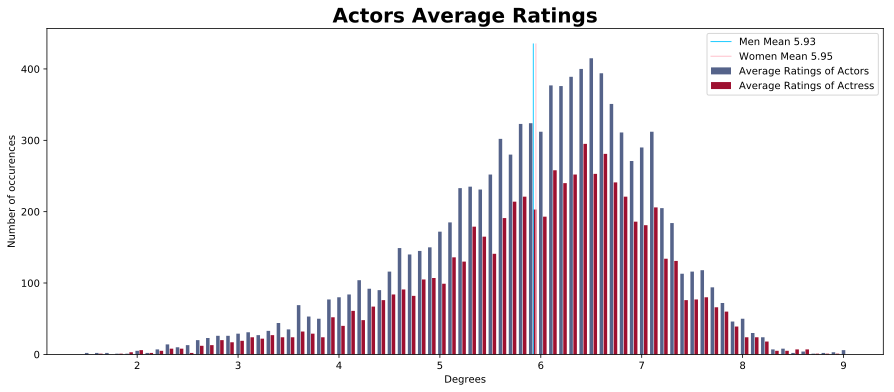
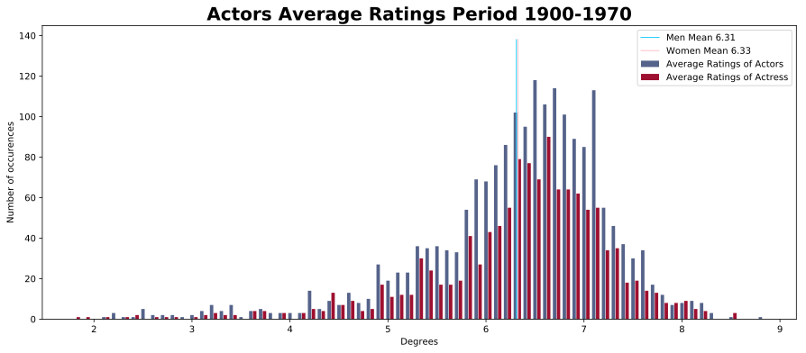
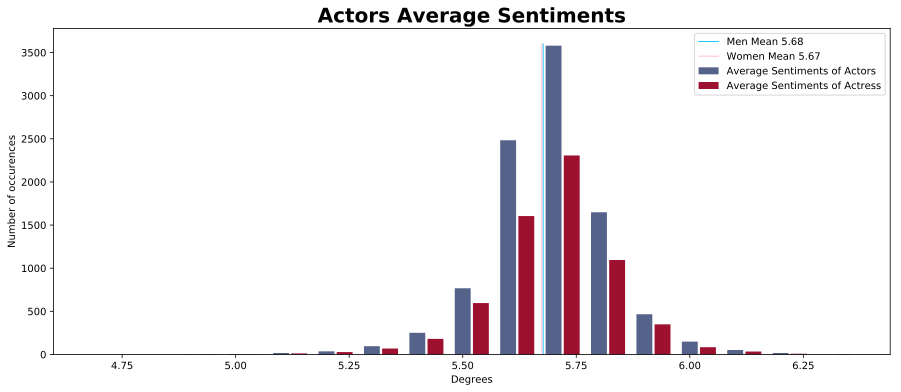
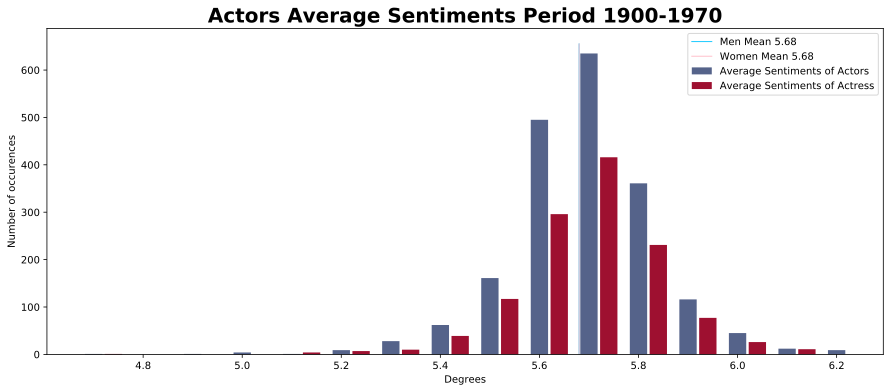

Final project 02805 Social Graphs and Interactions
Main | Data Stats | Graph | Sentiment | Communities | Ratings & Sentiments Graphs | Conclusion | Notebooks
For now the weights of the edges correspond to the number of collaborations between two actors.
Now we gonna replace those weight by the average ratings of the movies the two actors has made together and after by the average sentiment score.
Rating-Based Graphs:
To get a first overview on how the the ratings are distributed amongst the actors, it could be interessting to draw an histogram of the ratings.
Actresses and actors seem to have the same ratings distributions, with very similar average. Nonetheless actresses seems more present on the border of the rating range with a bigger proportion of women with very high or very low rating score.
To visualize the importance of the ratings on the graph, it is relevant to draw the graph of the actors with nodes computed as a function of their average rating. Some actors might have played in very few movies that all had a good rating, but it won't be relevant if they appear very big on the graph as their career in the cinema was really short. To tackle this issue, we set the size of actors that played in less than 10 movies to the minimum, so that those actors can't take too much importance.
Here is the graph we get:

In the same way we have done for the previous graphs, we can do the same analysis by period. Here we consider actors who have done at least 7 movies by period.
Here is the rating histograms we found:

Distributions tend to be similar in shape, but old actors have better ratings than new ones in average.
And here are the corresponding graphs:

We can see in the 1900-1970 graph in the bottom a group of actors with the same really high rating. It is because, those actors did the same movies in the 1950s which makes them really close in the graph and really big.
We can see that close nodes tends to have the same size (nodes below the number of movies limit excluded). This is normal as those nodes corresponds to actors playing together in movies. There is no major difference between actresses and actors excepted in the 1980s where 9 of the 10 biggest average ratings corresponds to men.
Nodes on the outside of the graph corresponds to less mainstream actors. So more of them haven't done a lot of movies and their nodes have the minimum size. But amongst those who have done a sufficient number of movies, we can see a lot of large nodes corresponding to good average ratings. This could be explain by the fact that mainstream movies tends to have average ratings and then mainstream actors too, which is not the case for smaller movies, making it easier for non mainstream actors to get good ratings.
It can also be interesting to use the rating-based graph to run the community analysis.
 The results we get are pretty similar to the one with the weight based on the number of collaborations. But we can now distinguish the community 14 (grey triangle - upper left) which corresponds to spanish-speaking actors.
The results we get are pretty similar to the one with the weight based on the number of collaborations. But we can now distinguish the community 14 (grey triangle - upper left) which corresponds to spanish-speaking actors.
The full community analysis report for the rating-based graph is available here.
Sentiment-Based Graphs:
The same way as for the rating-based graph, to get a first overview on how the the sentiment score are distributed amongst the actors, it could be interessting to draw an histogram.
Here again, actresses and actors seem to have the same sentiment score distributions, with very similar average. Even more the sentiment scores are really concentrated and hard to interpret.
Exactly as we have done before for ratings,it is relevant to draw the graph of the actors with nodes computed as a function of their average sentiment score. Not to give too much importance to actors, who played in very few movies, we set the size of actors that played in less than 10 movies to the minimum.
Here is the graph we get:

In the same way we have done for the previous graph we can do the same analysis by period. Here we consider actors who have done at least 7 movies by period.
Here is the sentiment score histograms we found:

Sentiment scores are really close and we cannot really interpret the results.
And here are the corresponding graphs:

We can see in the 1900-1970 graph in the bottom, the samegroup of actors we found with the rating based graph. But the graphs don't show a lot of difference between the nodes, even if the rendering function used to compute the node size is amplifying (exponentially) the sentiment score diffrence.
It can also be interesting to use the sentiment-based graph to run the community analysis.
 The communities we have are nearly the same as the ones found with the rating base analysis, including the spanish-speaking community.
That means that we get better communities in this case with all edges with very similar weights, instead of weights based ond the number of collaborations and that making one movie with another actor is already really important for the community analysis.
The communities we have are nearly the same as the ones found with the rating base analysis, including the spanish-speaking community.
That means that we get better communities in this case with all edges with very similar weights, instead of weights based ond the number of collaborations and that making one movie with another actor is already really important for the community analysis.
The full community analysis report for the sentiment-based graph is available here.